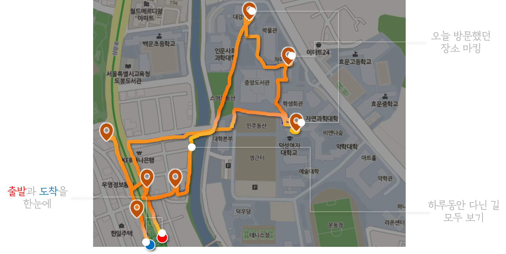
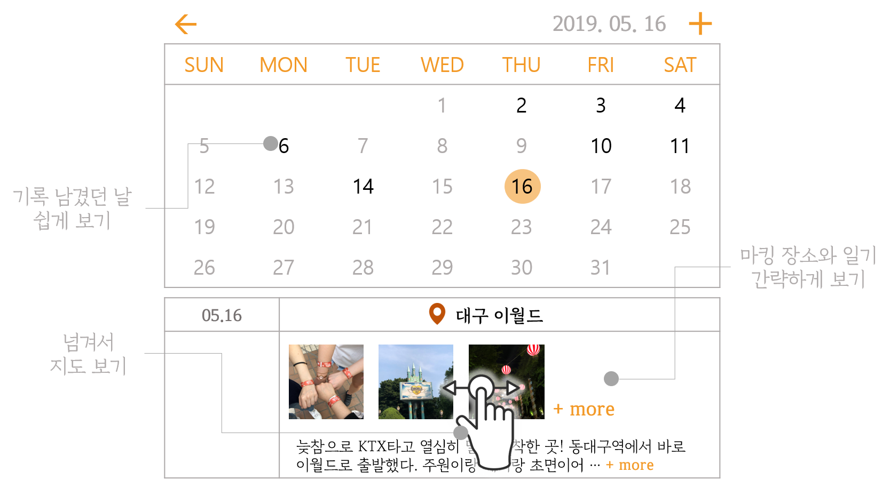
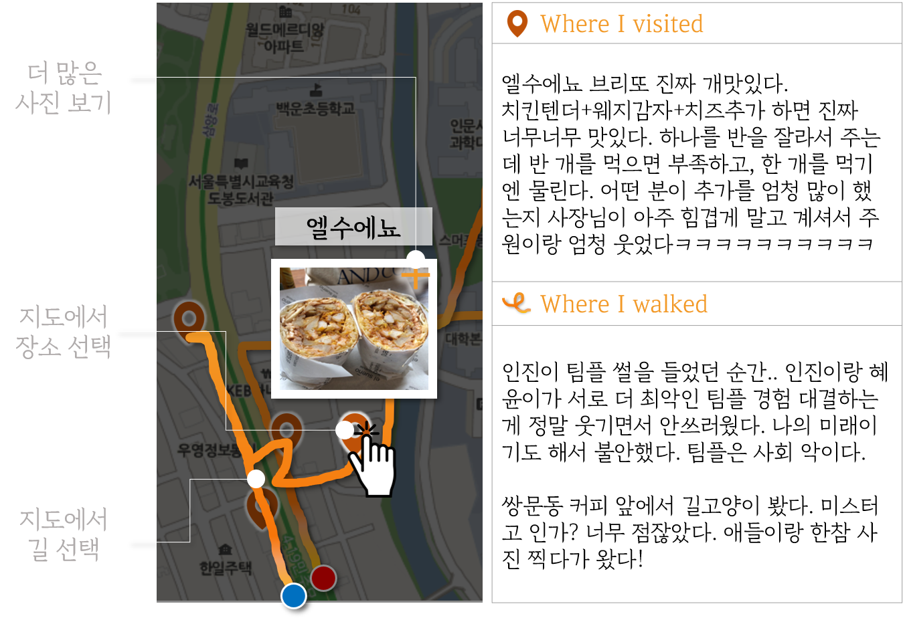

첫번째 과제
; 지원시 작성한 IT서비스 소개와 자기소개
|
오늘 다닌 곳 한눈에 보기 |
쉽고 세세하게 |
어떤 장소에서, 어떤 일이 ? |
|
사고 후 기억이 짧아진 친구를 대신해 친구의 하루를 기록하고 싶어 기획했습니다.
|
지도 한 장으로 보는 오늘의 기록하루의 패턴이 사람마다 다르기 때문에 |
 |
|  | 달력으로 보는 오늘의 순간날짜별로 무엇을 했는지 한눈에 볼 수 있습니다. |
더 세세하게어떠한 곳만이 아닌 다닌 길의 일부를 기록 할 수 있습니다. |
 |
SELF - INTRODUCTION
|